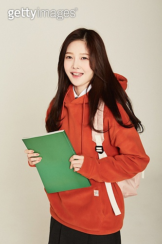
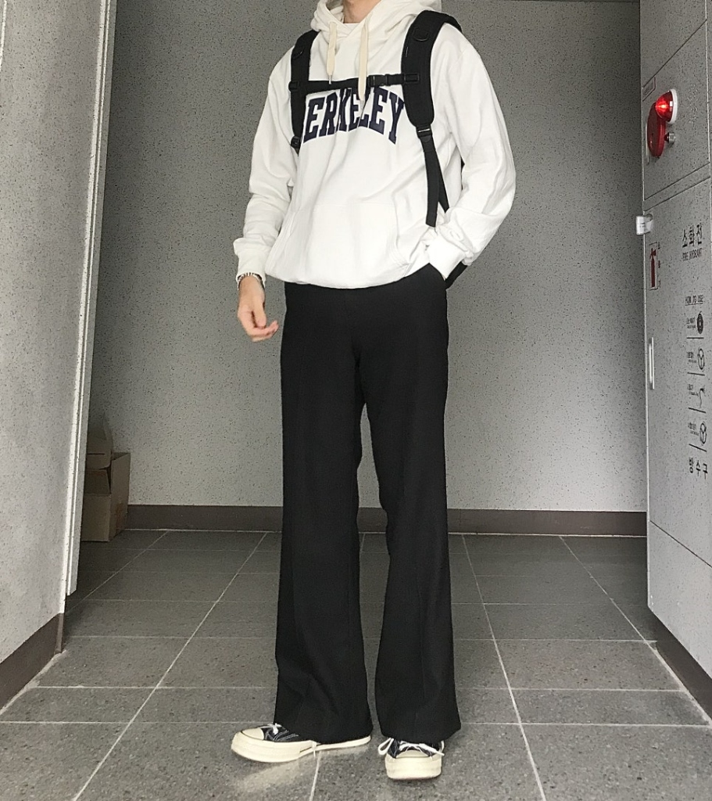
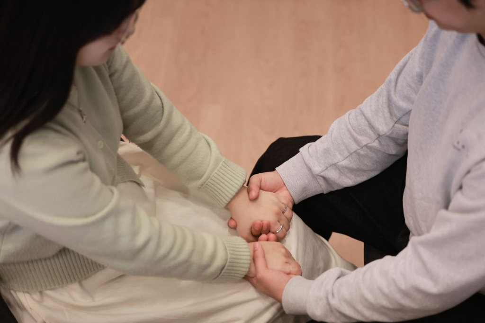
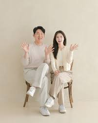

상담 후기
INCHEON LEADERSHIP DEPARTMENT와 함께한 분들의 진솔한 변화 이야기입니다.
🧠 심리코칭 / 내면 변화
처음에는 그냥 상담이라고 생각했는데, 제 안에 있던 감정 구조를 처음으로 이해하게 됐습니다. 왜 반복적으로 같은 문제를 겪는지 알게 되니까, 문제를 해결하려는 방향 자체가 바뀌더라고요.

중고등학교 때부터 감정이 많다고만 생각했지, 어떤 원리로 움직인다는 생각을 못했는데, 코칭을 통해 제 감정을 객관적으로 볼 수 있게 된 게 가장 큰 변화였어요. 너무 감사드려요

남자는 남자다워야한다는 생각에 심리코칭을 받아볼 생각을 못했어요. 친구들에게 놀림 받을 것 같다는 생각도 했구요. 그런데 받고나서 받기를 잘했다는 생각이 들어요. 불안이 계속 반복되던 이유가 외부 상황이 아니라 제 인식 구조 때문이라는 걸 알게 됐습니다. 그걸 깨닫고 나니까 삶이 훨씬 안정됐고 남자답다라는 말에 메이는 게 아니라 내면이 건강한 존재가 되야겠다라는 생각이 들었습니다
💑 부부 / 관계 회복

대화를 하면 항상 싸움으로 끝났는데, 상대를 이해하는 기준이 완전히 잘못돼 있었다는 걸 알게 됐습니다. 지금은 대화 자체가 달라졌어요.

남편을 바꾸려고만 했는데, 제 기준과 기대가 문제였다는 걸 알게 됐습니다. 관계가 편안해졌고, 오히려 상대도 자연스럽게 변했습니다.
서로 사랑한다고 생각했지만 계속 어긋났던 이유를 알게 됐습니다. 감정이 아니라 ‘관계의 구조’를 이해하게 된 게 가장 컸습니다.
이혼까지 고민했었는데, 지금은 다시 함께 방향을 맞춰가고 있습니다. 단순한 상담이 아니라 관계를 다시 설계하는 과정이었습니다.
📚 철학 / 인문 / 깨달음

단순한 강의가 아니라 ‘왜 살아야 하는지’를 다시 생각하게 만드는 시간이었습니다. 관계 문제를 넘어서 삶 전체를 보는 시각이 달라졌습니다.

책으로만 보던 내용들이 실제 제 삶과 연결되는 경험이었습니다. 지식이 아니라 이해로 바뀌는 과정이 인상 깊었습니다.

처음에는 호기심으로 시작했는데, 지금은 제 삶의 기준이 바뀌었다고 느낍니다. 사람과 관계를 바라보는 시선이 완전히 달라졌습니다.